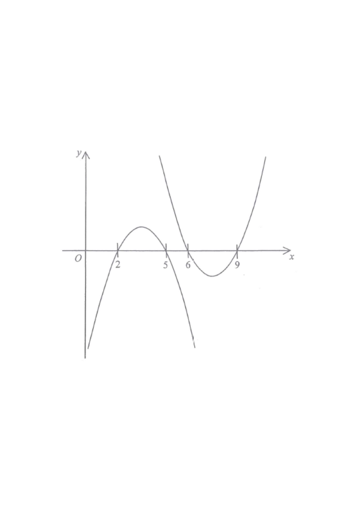

Step 1 — Given graph of $y=f(x)$: a downward parabola crossing the $x$-axis at $x=2$ and $x=6$.
Let $f(x)$ be a quadratic function. The figure below may represent the graph of $y=f(x)$ and
The given figure shows two parabolas: one opening downward passing through $x=2$ and $x=6$, and one opening upward passing through $x=5$ and $x=9$.

The downward parabola cuts the $x$-axis at $x=2$ and $x=6$,
so
\[ f(x)=a(x-2)(x-6),\qquad a<0. \]
Hint: roots of $f$ are the $x$-intercepts;
the sign of $a$ gives the opening direction.
The second curve opens upward and cuts the $x$-axis at $x=5$ and $x=9$. So its equation is of the form
\[ y=b(x-5)(x-9),\qquad b>0. \]
Hint: an upward parabola has a positive leading coefficient;
its roots are its $x$-intercepts.
\[ y=-3a(x-2)(x-6) \]
Since $a<0$, we get $-3a>0$, so this parabola opens upward — matching the direction.
But its roots are still $x=2$ and $x=6$, which does not match $x=5$ and $x=9$.
Hint: multiplying a function by a negative constant flips the opening but never moves the roots.
Replace $x$ by $x+4$: the roots move from $x=2,6$ to $x=2-4=-2$ and $x=6-4=2$. Then the minus sign flips the parabola upward (roots unchanged).
\[ y=-a(x+2)(x-2) \]
Roots $-2$ and $2$ do not match $5$ and $9$.
Hint: $f(x+4)$ shifts the graph $4$ units to the left,
not right.
Shifting left by $4$ gives roots $-2$ and $2$,
but the parabola stays downward — again wrong on both direction and roots.
Hint: a horizontal shift alone never changes the opening direction.
Substitute $x\mapsto -x+11$ into $f(x)=a(x-2)(x-6)$:
\[ y=a(-x+11-2)(-x+11-6)=a(-x+9)(-x+5) \] \[ y=a(x-9)(x-5) \]
This is exactly $b(x-5)(x-9)$ with $b=a<0$ … but we need it to open upward.
Hint: $-x+11$ is a reflection in the vertical line $x=\tfrac{11}{2}$;
a reflection is symmetric, so the roots become $11-2=9$ and $11-6=5$. ✔ roots match.
The transformation $-x+11$ is a reflection in the vertical line $x=\frac{11}{2}$ followed by a reflection in the $x$-axis when written as $f(-(x-11))$. In fact
\[ f(-x+11)=f(-(x-11)) \]
represents a horizontal reflection about $x=11$ composed with a vertical flip,
which turns the
downward parabola into an upward one and moves the roots $2,6\to 9,5$.
Hint: combining the root positions $5$ and $9$ with the upward opening identifies B uniquely.
(i) Roots — B gives $x=5$ and $x=9$ ✔
(ii) Opening — B opens upward ✔
(iii) Symmetry — axis of symmetry of the second curve is $x=\dfrac{5+9}{2}=7$,
and the
given $f$ has axis $x=4$;
the reflection $x\mapsto -x+11$ maps $4\mapsto 7$ ✔
Hint: all three properties agree for option B,
while A, C, D each fail at least one.
Question. The graph of \\(y=f(x)\\) is a downward parabola cutting the \\(x\\)-axis at \\(x=3\\) and \\(x=7\\). A second curve opens upward and cuts the \\(x\\)-axis at \\(x=1\\) and \\(x=5\\). Show that the second curve can be written as \\(y=-f(8-x)\\), and state its axis of symmetry.